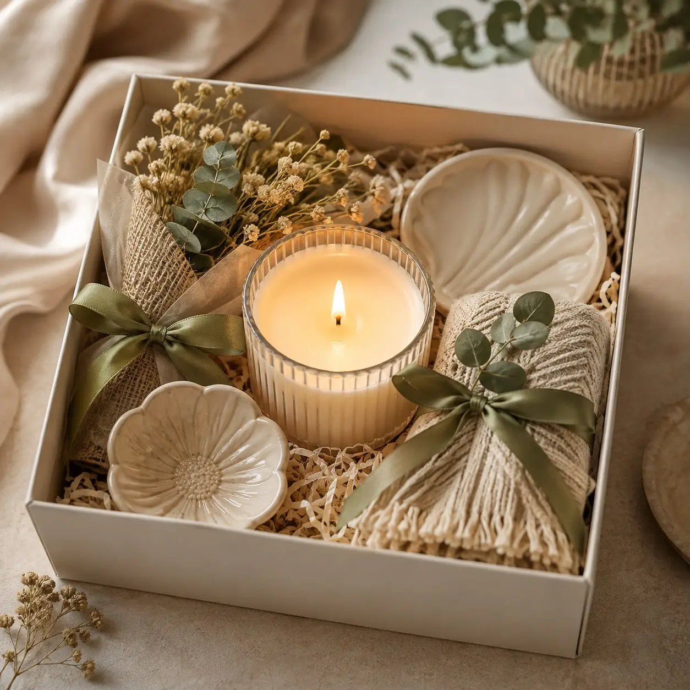
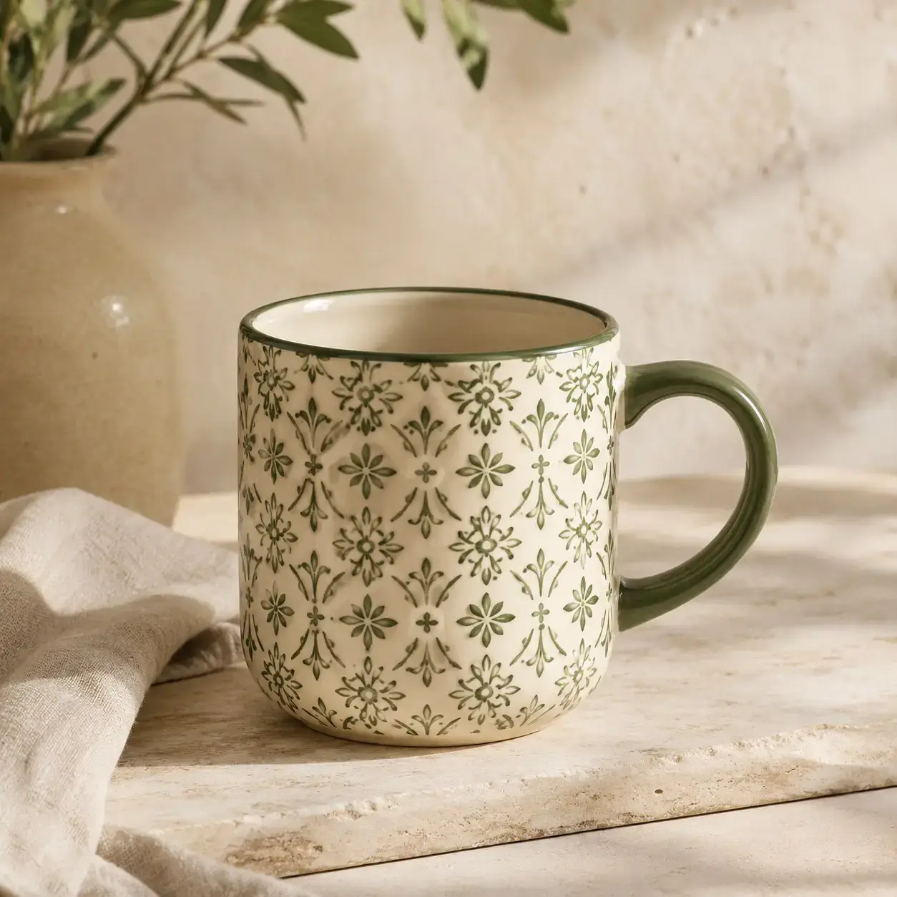

Seçmesi
keyifli.
Doğum günü, teşekkür ya da ev ziyareti... Kime alacağını düşün, sonra farklı seçeneklere göz at.
İçinden geleni seç
Bir hediye seç.
Birini sevindir.
Doğum günü, ev ziyareti veya küçük bir teşekkür için hediyeleri dükkânımızda keşfet.
Hediyelere göz at
Bazen doğum günü için, bazen içinden geldiği için... Hediye alırken karşındaki kişinin nelerden hoşlandığını düşünmek yeter.
Antalya'da hediyelik eşya arıyorsan, Döşemealtı Yeniköy'deki mağazamızda farklı hediye fikirlerini inceleyebilirsin. Renklerini, boyutlarını görerek beğendiğini seçebilirsin.



Doğum günü, teşekkür ya da ev ziyareti... Kime alacağını düşün, sonra farklı seçeneklere göz at.
Kupa gibi günlük hayatta kullanılan ürünler de güzel birer hediye olabilir. Renkleri ve modelleri yerinde karşılaştır.
Evi için hediye aradığın birine dekoratif ürünleri de düşünebilirsin. Beğendiğin ürünün boyutuna ve görünümüne yakından bak.
BİZİM DÜKKÂNDA
Hediyenin rengini, boyutunu ve ayrıntılarını yerinde görmek karar vermeyi kolaylaştırır. Görseller örnek amaçlıdır; ürün çeşitleri ve stok değişebilir.

Sevdiklerine veya kendine güzel bir hediye seçmek istersen Döşemealtı Yeniköy'deki dükkânımıza bekleriz.
MERAK EDİLENLER
Harika Şeyler Dükkanı, Antalya Döşemealtı Yeniköy'de İnönü Caddesi No: 127/8 adresinde. Hediyelik eşya seçeneklerini mağazamızda inceleyebilirsin.
Hediye ve dekoratif ürün seçeneklerimiz zamanla değişebilir. Belirli bir model arıyorsan önceden bize sorabilirsin.
Doğum günü için farklı hediye fikirlerini mağazamızda değerlendirebilirsin. Hediye alacağın kişinin zevkini düşünmek seçimini kolaylaştırır.
Kupa veya dekoratif ürün gibi seçenekleri değerlendirebilirsin. Güncel modelleri yerinde inceleyebilirsin.
Fiyatlar ürünün modeline ve özelliklerine göre değişir. Güncel fiyatları mağazamızdan veya telefonla öğrenebilirsin.
Hediye paketi hizmetinin o gün mevcut olup olmadığını gelmeden önce 0532 373 36 33 numarasından sorabilirsin.
Fotoğraflar örnek amaçlıdır; canlı stok listesi değildir. Aradığın ürünün veya rengin bulunup bulunmadığını bize sorabilirsin.
Hafta içi 08.00–20.00, cumartesi ve pazar günleri 10.00–21.00 saatleri arasında açığız. Resmî tatillerde saatleri teyit edebilirsin.
Doğum günü, ziyaret ve küçük teşekkürler için neye dikkat edeceğini pratik örneklerle keşfet.